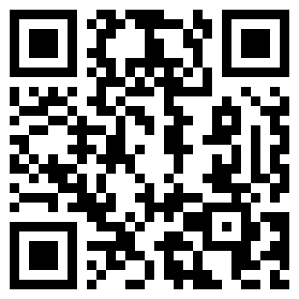

Pass the Glass
English
Pass the Glass
English
Je wijnbox in Pass the Glass
Verkoop je wijnboxen om thuis te proeven? Met een QR-code op het kaartje in de doos staan alle wijnen klaar voor een proeverij met vrienden, met naam, jaargang, prijs en een foto van het etiket.
Jij stuurt ons de inhoud van de box, wij regelen de techniek.
Zo werkt het voor je klant
- Scannen. Je klant scant de QR-code op het kaartje met de camera. Op een iPhone of iPad opent dan de gratis app Pass the Glass, met de proeverij klaar. Met een andere telefoon proeft je klant in de browser, zonder iets te installeren.
- Proeven. De wijnen staan klaar en de proeverij heeft de naam van je box. Proevers erbij, blind of open, en de telefoon gaat rond.
- Onthullen. Per wijn een tromgeroffel, aan het eind de winnaar en de Beste koop. De uitslag delen ze als plaatje in de groepsapp.
De app is gratis voor je klant. De uitslag blijft op diens telefoon of iPad: de app stuurt niets terug en er wordt niets bijgehouden. Wil je weten welke wijn won? Vraag het op het kaartje, bijvoorbeeld via je WhatsApp of e-mail.

Probeer het zelf
Scan deze QR-code met de camera van je telefoon, of in Pass the Glass bij Nieuwe proeverij › Scan wijnbox. Je krijgt een voorbeeldbox met vier verzonnen wijnen.
Wat wij voor je doen
- Jij stuurt de inhoud van de box. Je krijgt van ons een invulbestand voor de wijnen, jaargangen en prijzen, en als je wilt foto's van de etiketten en een spijstip.
- Wij regelen de techniek. We zetten de box online op een vast adres en testen hem in de app en in de browser.
- Je krijgt de QR-code, om mee te geven in de box of op je website, met een korte tekst voor het kaartje.
- Aanpassen kan altijd. Een tikfout of een andere wijn in de doos? Wij passen het aan; de QR-code blijft gewoon werken.
Meer weten?
Alles op een rij, om te bewaren of door te sturen: download de brochure (pdf).
Wat het kost
Dat hangt af van hoeveel boxen je maakt en hoe vaak ze wisselen. Mail ons wat je van plan bent, dan maken we een voorstel dat bij je winkel past.
Wil je de box liever op je eigen website zetten? Ook dat kan, mail ons.